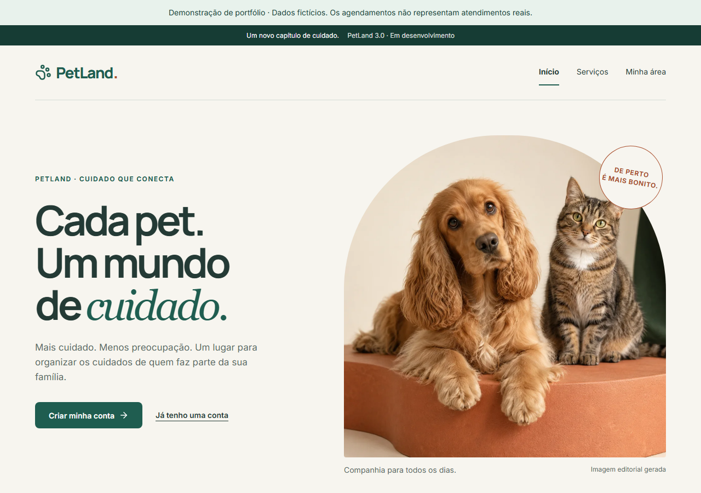
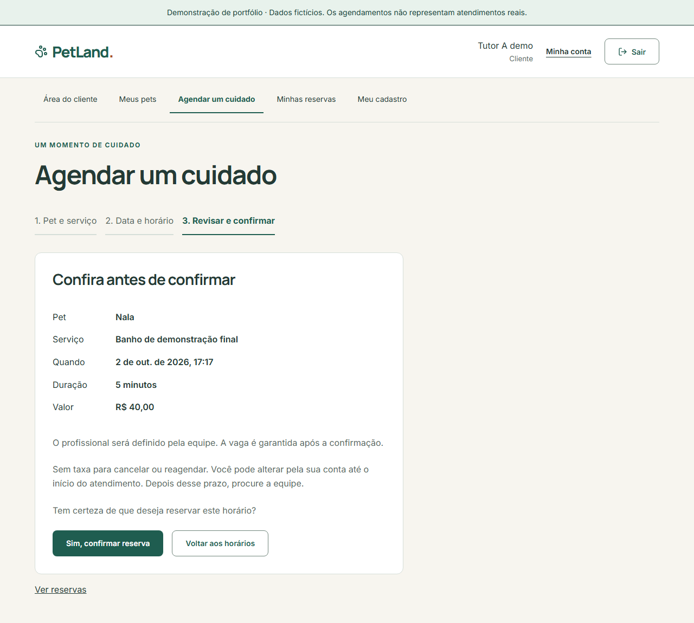
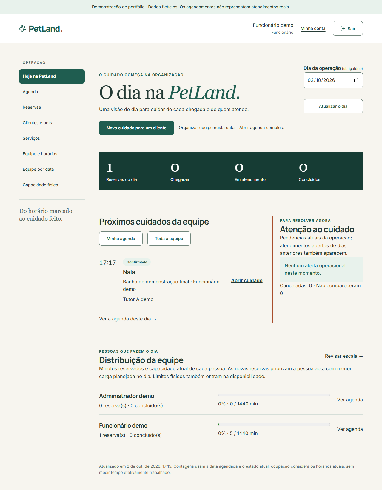
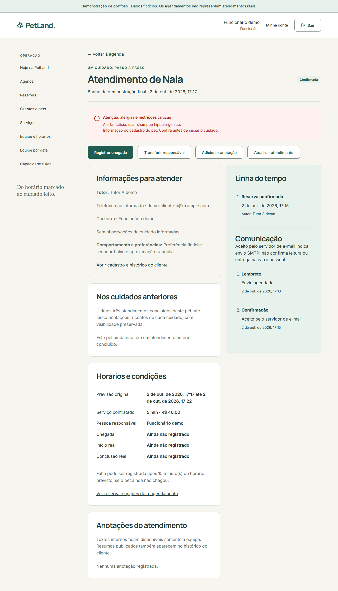
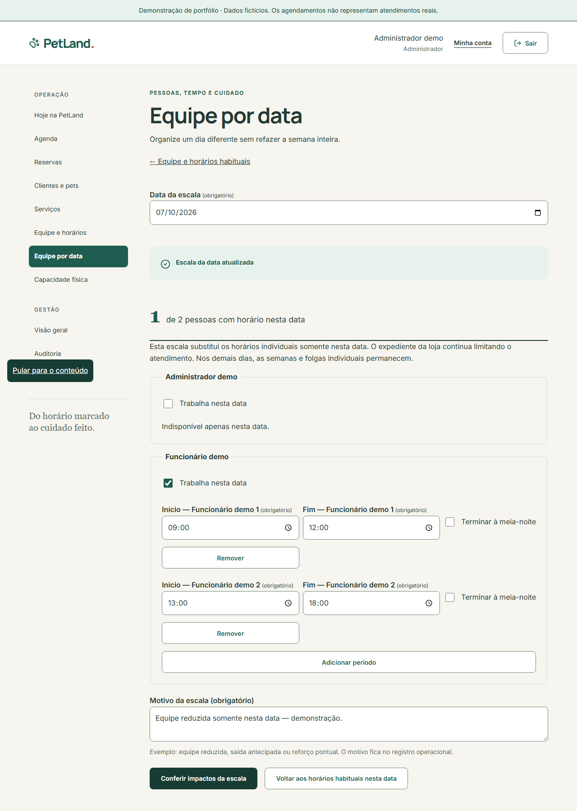
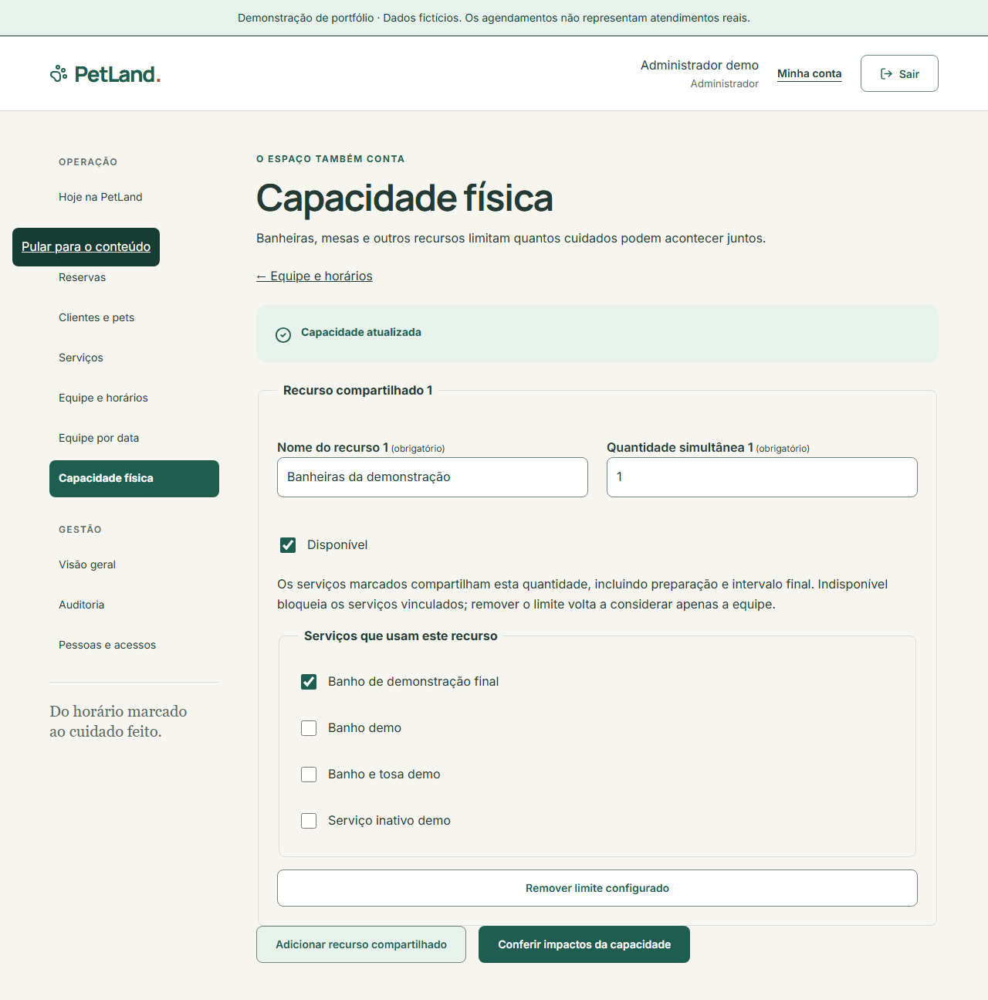
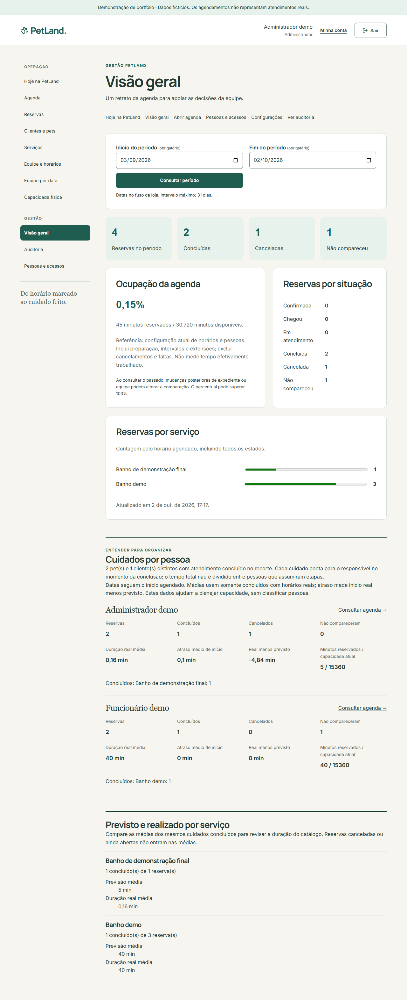

O cuidado do pet.
Uma operação inteira.
Do primeiro horário ao pet pronto para buscar. Uma plataforma que conecta tutor, equipe e gestão, com contexto e histórico.
Apresentação final do escopo implementado · 3.0.0-rc.1 · Demo local com dados fictícios · Aceite humano pendente.

Um horário vazio
não é uma vaga.
O tutor quer previsibilidade. A equipe precisa de contexto. O gestor precisa mudar o dia sem perder o que já foi combinado.
O 2.0 expressava a intenção de autoatendimento, mas misturava rotas, SQL e regras. Disponibilidade por contagem e contratos divergentes não comprovavam uma reserva segura sob concorrência.

O combinado precisa
continuar valendo.
-
Uma vaga real
Loja aberta, pessoa apta, escala, duração, bloqueios e recurso físico. Profissional atribuído pelo servidor; horário escolhido pelo tutor.
-
Um cuidado contínuo
Resumo antes de confirmar. Alergias antes de iniciar. Transferência com motivo. Histórico, preço e duração preservados.
-
Um dia compreensível
Painel diário, equipe de uma única data e prévia de impacto. Indicadores com atribuição explícita, sem ranking automático.
Uma loja, três perfis, um pet/serviço por reserva e sem taxas. Personas são hipóteses, sem alegação de pesquisa com lojas reais. Decisões e limites.
A mesma Nala.
Três perspectivas.
Uma jornada contínua de cerca de quatro minutos: tutor reserva, equipe cuida, gestão ajusta a operação. Sem áudio, com legendas e transcrição; relógio real do servidor.
Transcrição completa · Legendas WebVTT · Baixar vídeo final · Proveniência
Ler a jornada sem reproduzir o vídeo
Preparação: contas demo verificadas/contato pronto, serviço fictício de cinco minutos/R$ 40, duas pessoas aptas, passo de um minuto e expediente excepcional. Reserva futura via API comum do tutor para o impacto. SMTP verificado no Mailpit local; nenhum envio externo alegado.
Contexto para quem cuida.
Autonomia para quem espera.
Tutor · O próximo passo aparece
O início contextualiza contato, pet e reserva. O preço chega antes da confirmação. Depois, o tutor acompanha o status e o resumo publicado.


Equipe · O dia tem contexto
Painel diário e agenda levam ao mesmo cuidado. Alergias/preferências acompanham Nala; a leitura crítica é confirmada antes do início. Transferir conserva o combinado.








Gestão · Mudar com responsabilidade
Concluídos, duração e carga ajudam a revisar a operação. Uma prévia identifica reservas afetadas e bloqueia salvar a escala incompatível; o histórico permanece.



Engineering Highlights
A interface acolhe. A transação protege.
-
InterfaceReact
TypeScript · TanStack Query · RHF/Zod
- OpenAPI → tipos gerados
- Estado remoto e erros claros
- Tokens e fontes locais
-
AplicaçãoFastAPI
Modular monolith · Hexagonal Architecture · DDD pragmático
- Domínio → casos de uso → ports/adapters
- Idempotency em retentativas
- Transactional outbox para comunicação
-
PersistênciaPostgreSQL
SQLAlchemy/psycopg · Alembic
- Database constraints · intervalos GiST
- Concurrency · lock da loja primeiro
- Snapshot, autoria e atomicidade
Uma loja não exigiu serviços distribuídos. Lock da loja favorece segurança e previsibilidade, com contenção de escrita assumida. SMTP aceito não comprova entrega externa.
Arquitetura aprofundada e diagramas · Modelo de dados · Decisões de arquitetura
O que esta jornada comprova.
Cadastro e reserva persistidos, transferência com horário preservado, conclusão real e nota interna ausente do payload público. Aviso de pronto encontrado no Mailpit. Prévia de escala bloqueada sem alterar a reserva.
Capturas desktop/mobile verificam axe, reflow e erros JS. O player verifica links, duração, seek e legendas. Hashes, ambiente, viewport e preparações acompanham os arquivos.
Conferir a captura final · Evidência e validações
- 128 / 20 / 15
- Python / React / E2E na auditoria anterior; um skip mobile previsto. Não são novas contagens da gravação.
- 414,61 ms
- p95 de reserva na CI 31920b4, tentativa 2; meta 800 ms. Tentativa 1 falhou em leituras, sem metas relaxadas.
CI de referência. Laboratório, sem benchmark comparável do 2.0, ganho percentual ou SLO produtivo alegado.
Final no escopo.
Limites explícitos.
Uma loja e um pet/serviço por reserva. Sem grupos atômicos, pagamentos, recorrência, escolha pública de profissional ou recepção em tela única.
Aceite humano dos perfis e leitor de tela continuam pendentes. D10 adia provedor/domínio, SMTP externo, backup fora do host e metas produtivas. Decisão de licença geral também permanece pendente.
Próximo passo em produção: validar ambiente alvo, entrega de e-mail, retenção, chaves, observabilidade, SLO e RPO/RTO. A candidata não é um serviço comercial publicado.
Abra o produto.
Siga o cuidado.
Cliente em /app, equipe em /operacao, administração em
/gestao. Contas próprias da demo e e-mails no Mailpit, com instruções
reproduzíveis.
Este preview serve só o material público. Capturas finais: f3d70a2, esquema 0007, dados fictícios. Nenhum merge, tag ou release estável realizado nesta entrega.